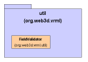

Xj3D VRML Utilities Package
Author: Justin Couch
Last updated: $Date: 2001/04/30 09:01:02 $
Revision: $Revision: 1.1 $
Intro
The util package contains utility classes that help build content and
implementations of the other interfaces in this component. For example, the
basic interfaces just provide raw field information is it is read from a file.
Before using this information, we want to check that the values are within
range etc for that field. The utils classes provide easy, convenient handling
of this.
Background
The utilities package consists of a single class - the field validator
currently. We expect over time that it will contain more functionality.
Motivation
Structural Overview
The code is a single package with no sub-packages.
Code Layout
There is currently only one class in the package.

Figure 1: UML Structure diagram of the VRML Utility classes
FieldValidator
The FieldValidator class is designed to be used as a standalone
checker for field values just after they have been parsed or set in a field.
As all the nodes may through a FieldValueException, the validator will take
care of this. If the field value passes the requirements for that field, it
will return from the method. If it does not pass the requirements, it will
automatically create and throw the exception. This saves the user the need
to write error generation code for every time a field is checked.
Runtime Semantics
There is no specific runtime issues associated wit the code. The validator
is a single class instance with static methods so it does not need to be
instantiated.
Extending the Code
N/A
References